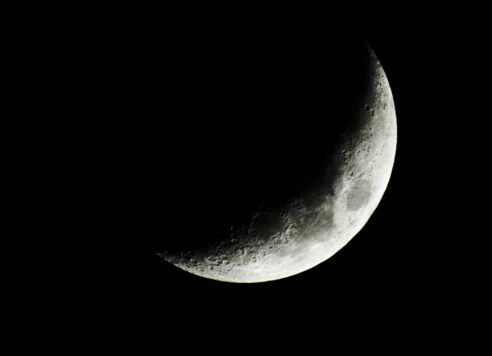
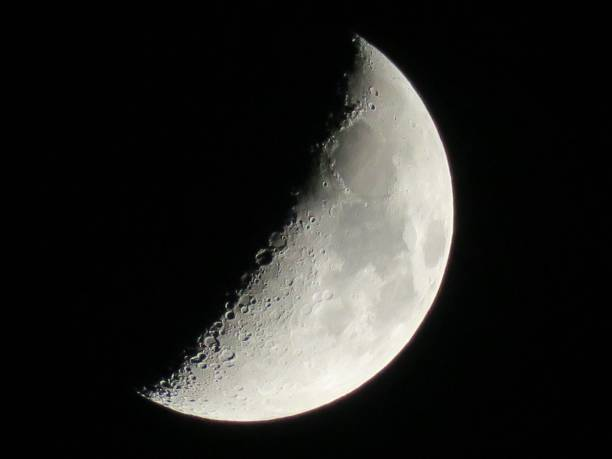
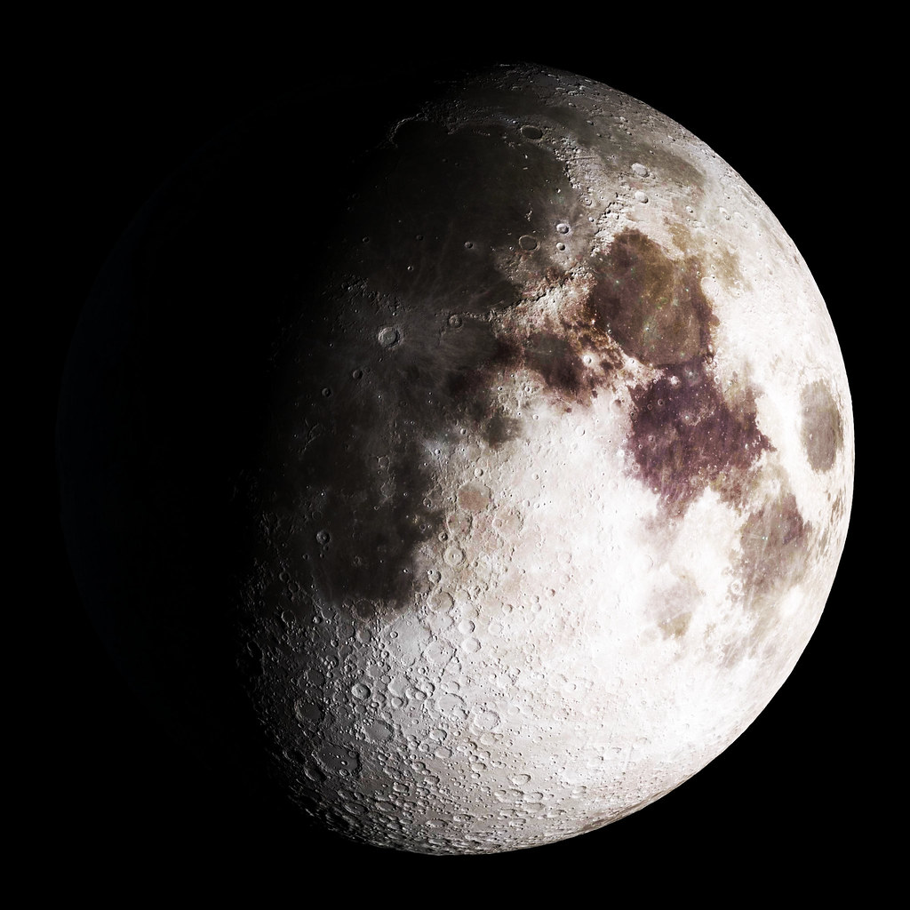
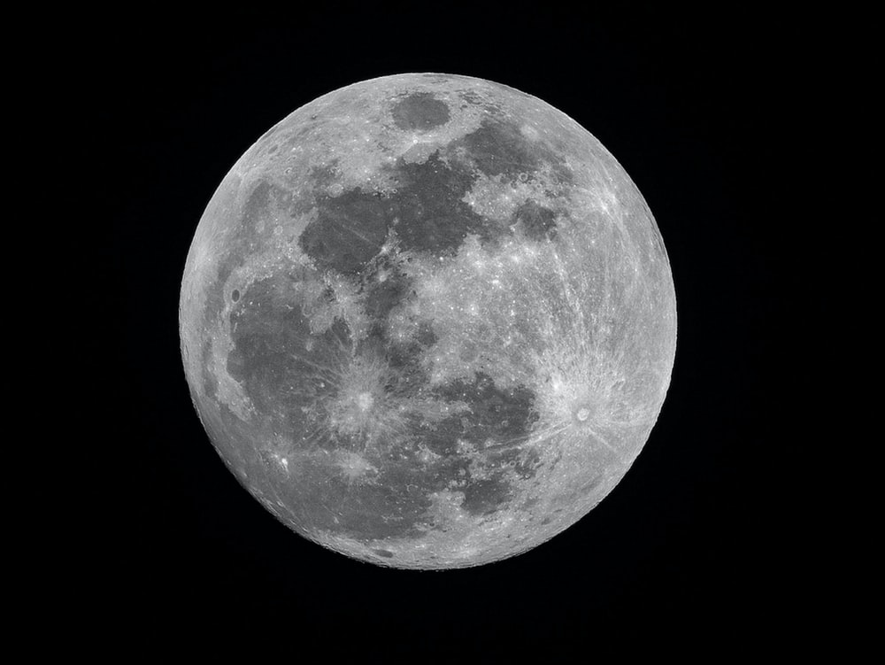
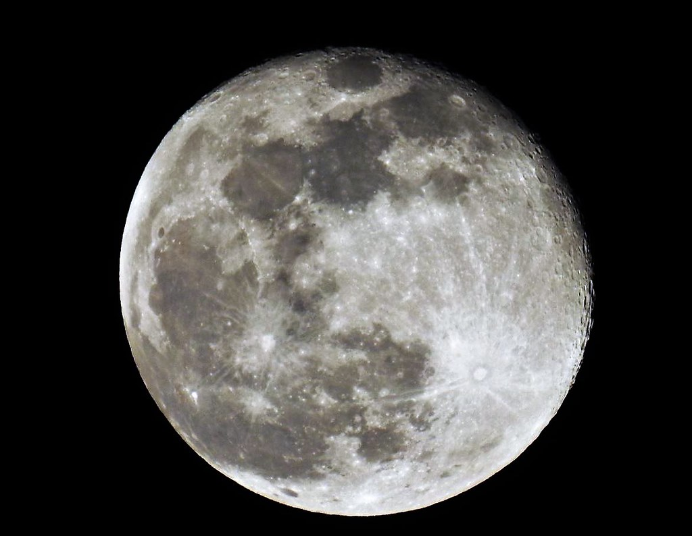
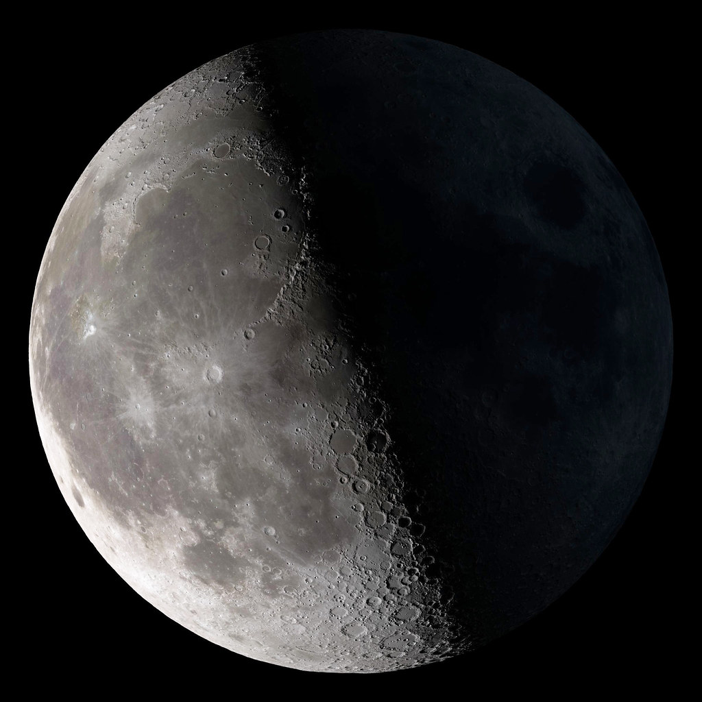
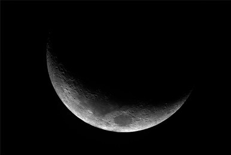

Now is a good time for beginnings and for renewed clarity. Take some time to think about what elements in your life could use a fresh start and what you need to let go of for this new cycle.

The Waxing Crescent Moon is a great time to start manifesting prosperity! What is your dream job? What are your goals? Now is the time to attract those things into your life.

Remember your manifestations during the Waxing Crescent? Well, time to put your money where your mouth is. Take action and achieve the things you want. Dreaming will only take you so far.

Everything you need is coming into place. But it is important during this time to take a step back and observe. Are your dreams turning out the way you envisioned? If not, it's time to reevaluate and refine.

The Full Moon brings clarity to what is truly important in life. Be careful, as emotions run high during this time. Take this clarity and apply it to your actions so far. What has been serving you and what hasn't?

Now that you know what isn't serving you, this phase is the perfect time to cut out some minor loose ends. It is time to trim, refine, and reevaluate some more.

Meditate on what obstacles you've encountered so far. This is the time to persevere and overcome. Smooth out any wrinkles in your plans and enjoy how far you have come.

We have now come to the end of the lunar cycle. Use this phase to cut out any major issues in your life or plans. Now is the time to wipe the slate clean to make way for new beginnings.